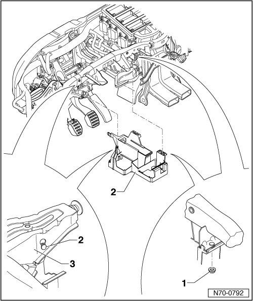
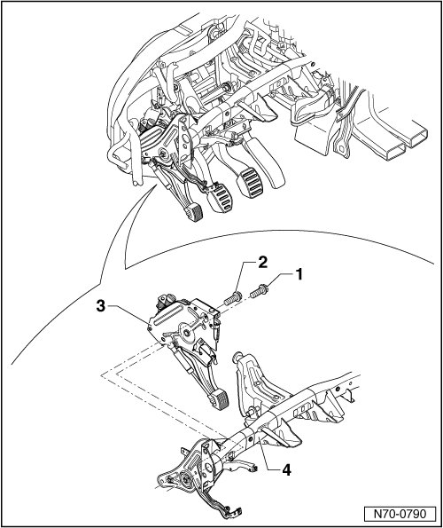
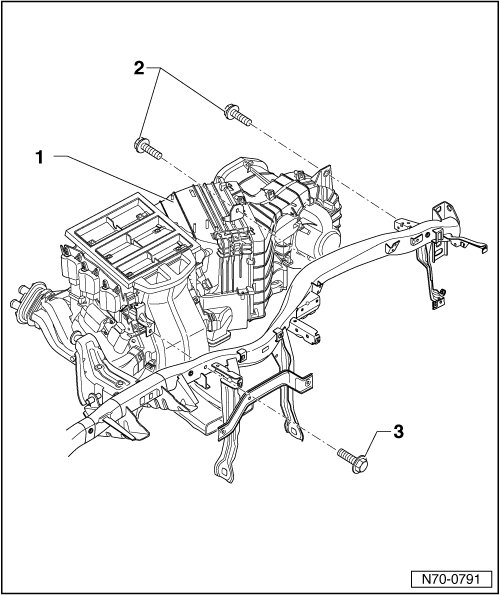
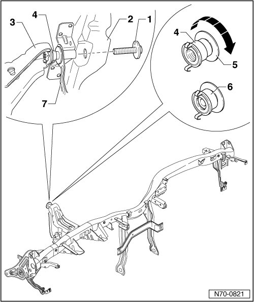
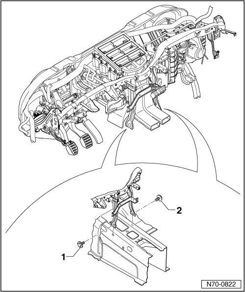
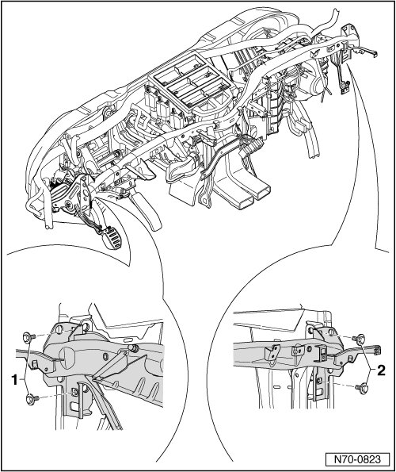
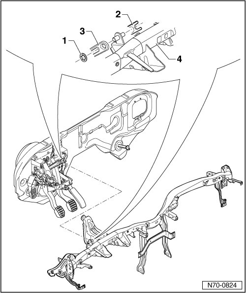

Assembly Carrier
Assembly Carrier
Removing
- Secure vehicle against possible rolling. The parking brake may not be used for this, because the operating mechanism will later be disassembled.
- Select rearmost driving range position.
- Remove center console storage compartment --> [ Center Console Storage Compartment ] Center Console Storage Compartment.
- Remove center console --> [ Center Console ] Center Console
- Remove driver airbag unit --> [ Driver Airbag ] Driver Airbag
- Remove steering wheel --> [ Steering Wheel ] Steering Wheel
- Remove steering column trim --> [ Steering Column Trim ] Service and Repair
- Remove side instrument panel covers --> [ Instrument Panel Side Covers ] Instrument Panel Side Covers.
- Remove footwell covers --> [ Footwell Covers ] Footwell Covers
- Remove instrument shroud --> [ Instrument Shroud ] Instrument Shroud
- Remove upper A-pillar trim --> [ Upper A-Pillar Trim ] Upper A-Pillar Trim
- Remove instrument panel --> [ Instrument Panel ] Instrument Panel
- Remove plenum chamber cover
- Separate steering column from assembly carrier.
- To ensure proper installation position when reinstalling, mark installation position vertically and horizontally on left and right A-pillar securing brackets with an awl.
- Depending on vehicle equipment, remove Ground (GND) cable and side fuse holder.
- Remove nut - 1 -.
- Remove onboard power supply control module bracket - 2 - from mounting in assembly carrier - 3 -.

- Remove bolts - 1 - and - 2 - (23 Nm).
- Remove parking brake operating unit - 3 - from assembly carrier - 4 -.

- Secure heating and air conditioning unit - 1 -, in front passenger footwell, against possible sagging.
- Remove the two bolts - 2 - (10 Nm).
- Remove bolt - 3 - (10 Nm).

• The assembly carrier is secured with a bolt - 1 - on the bulkhead - 2 -. The position of the bolt is above the steering column. The bolt is accessible from the plenum chamber.
- Remove bolt cap - 1 - in plenum chamber and remove bolt (23 Nm).
- A spacing element - 4 - is installed between bulkhead - 2 - and assembly carrier - 3 -.
- Before assembly carrier is reinstalled, the spacing element - 4 - must be completely retracted - 6 - by turning outer disk - 5 - - arrow -.
• During reinstallation, ensure that foot pedal cluster bracket - 7 - is also bolted into this connection.

- Remove 2 bolts for tunnel supports - 1 - and - 2 - (23 Nm).

- Remove two bolts each on left and right sides - 1 - and - 2 - (23 Nm).

- Remove lock washer - 1 -.
- Pull crash bars - 2 - and - 3 - for foot pedal cluster down from mounting pins on assembly carrier - 4 -.
• During installation, check that both crash bars - 2 - and - 3 - are installed. Crash bar - 3 - must also be additionally secured with a lock washer.
- Remove assembly carrier from vehicle.

Installing
- Perform the steps used for removal in reverse order.
• Ensure that the assembly carrier is aligned vertically and horizontally in vehicle. To do this, use the corresponding scribe marks on left and right on A-pillar securing brackets.